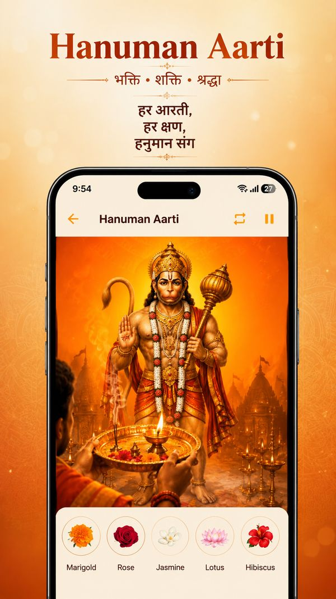
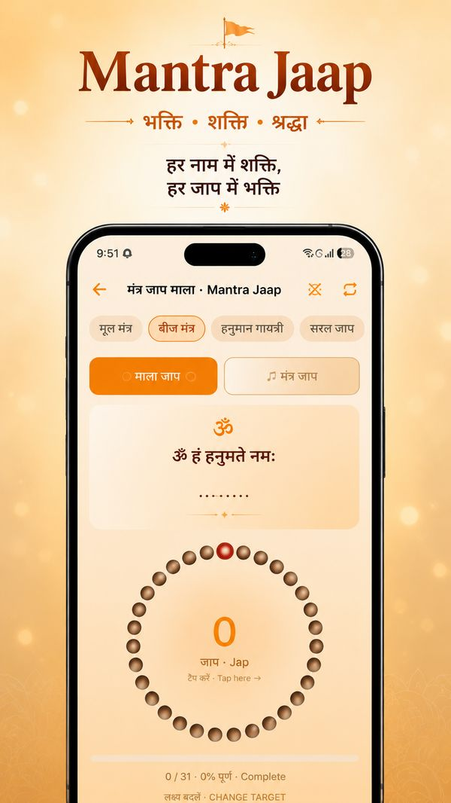
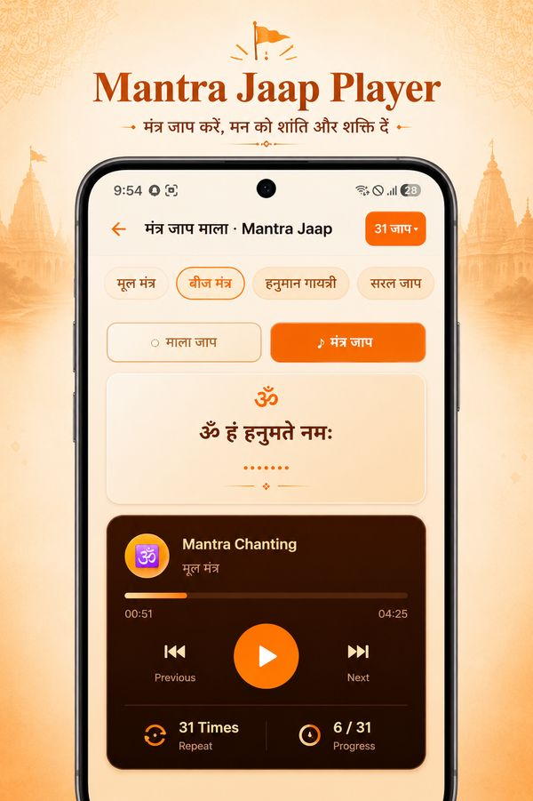
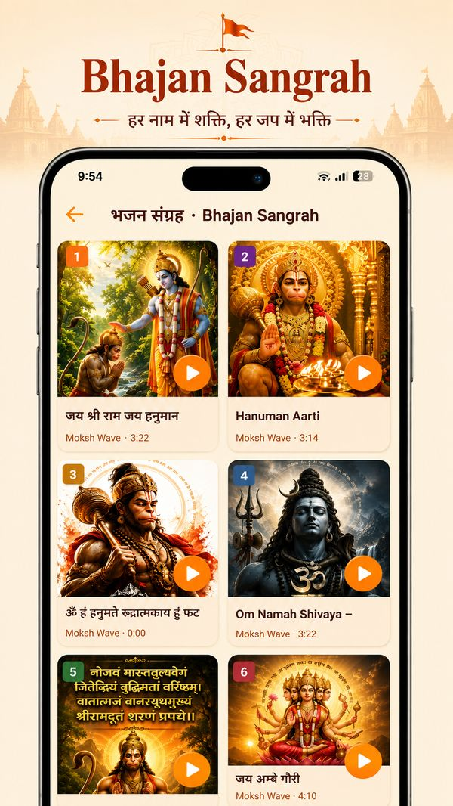
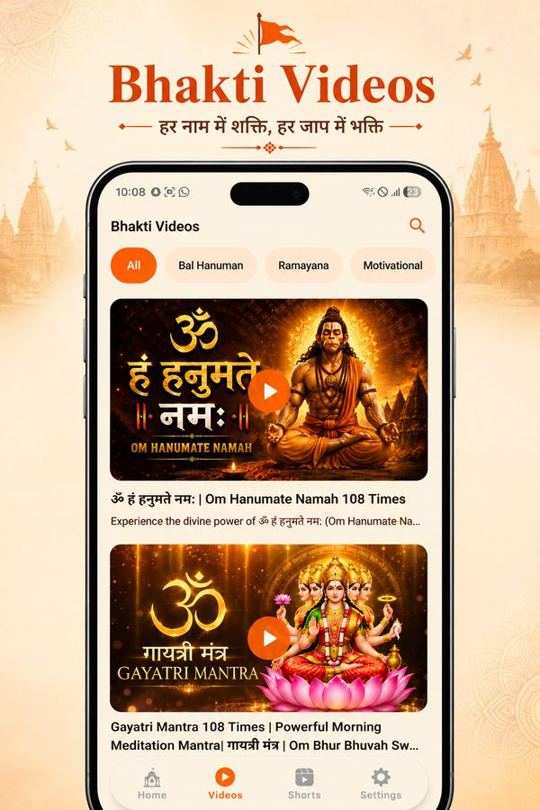

Everything You Need for Hanuman Bhakti
Hanuman Dham (formerly Hanuman Chalisa by Yunok Tech) is a free Android app for daily Hanuman worship. It brings together the Hanuman Chalisa with meaning, aartis, Bajrang Baan, Sankat Mochan, Sundarkand, a digital Mantra Jaap mala, bhajans, bhakti videos, divine wallpapers and puja reminders — in a warm, distraction-free design. Here is everything inside.
Hanuman Chalisa with Meaning
Read all 40 chaupais and dohas in four views, with comfortable text sizing for every age.
- हिंदी — original Devanagari text
- अर्थ सहित — simple Hindi meaning of every verse
- English transliteration and English Meaning
- Works 100% offline, plus audio & video Chalisa
- Today's Chaupai on the home screen and as a home-screen widget

Hanuman Aarti & Virtual Puja
Play the aarti with lyrics and perform a virtual puja wherever you are.
- Aarti Sangrah — Hanuman Aarti, Shri Ram Aarti and Sundarkand Aarti
- Audio player with synced Hindi & English lyrics
- Offer virtual flowers — marigold, rose, jasmine, lotus and hibiscus
- Background playback with a mini-player

Mantra Jaap Mala Counter
A digital mala that counts every jaap — just tap. Includes 4 Hanuman mantras such as ॐ हं हनुमते नमः (मूल मंत्र), ॐ हं हनुमते रुद्रात्मकाय हुं फट (बीज मंत्र), the Hanuman Gayatri and the simple 'Jai Shri Ram, Jai Hanuman'.
- Targets of 11, 108 (one mala) and 1008 jaap
- Beautiful mala animation with progress tracking
- Gentle vibration on every count
- Daily jaap progress on the home screen

Mantra Jaap Player
Can't chant aloud? Let the app chant with you. Choose a mantra and set how many times it should repeat.
- Audio chanting for each mantra
- Set repeat counts and follow live progress
- Previous / next mantra controls

Bhajan Sangrah
A curated collection of Hanuman and Ram bhajans with a full-screen player.
- 12 devotional bhajans — 'Jai Shri Ram Jai Hanuman', 'Hanuman Aarti' and more
- Plays in the background with a floating mini-player
- Beautiful artwork for every bhajan

Bhakti Videos & Shorts
Dedicated Videos and Shorts tabs with Hanuman, Ram and other devotional videos — plus a 'Today's Pick' video every day.
- Categories like Bal Hanuman, Ramayana and Motivational
- Mantra videos such as 'Om Hanumate Namah 108 Times'
- Short devotional reels in the Shorts tab

Divine Hanuman Wallpapers
Start every day with Hanuman bhakti on your screen.
- HD Hanuman Ji wallpapers
- Set as home or lock screen in one tap
- New wallpapers added regularly
Paths, Stotras & Katha
Bajrang Baan
The Shakti Path in Hindi and English for protection and courage. Read →
Sankat Mochan
All 8 pads of the Sankat Mochan Hanuman Ashtak. Read →
Sundar Kand
The complete 5th Sopan of Ramcharitmanas — all 60 dohas. Read →
Hanuman Katha
Hanuman Ji's life story, from birth to immortality. Read →
Illustrated Stories
Swipeable stories — Lanka Dahan, Pratham Bhent, Sanjeevani, 12 Hanuman Naam and Hanuman Mantra.
Suvichar (Quotes)
Daily devotional thoughts to share with family and friends.
Daily Practice Tools
Puja Alarms
Reminders for morning puja, afternoon bhog and evening aarti, a Tuesday special path, and your own custom alarms.
Bhakti Streak & Sankalp
Take a sankalp, track your daily path and jaap, and keep your devotion streak going.
Temples
Discover famous Hanuman temples and their significance.
Festivals
Upcoming Hindu festivals with their dates and significance, so you never miss Hanuman Jayanti.
Panchang
Today's tithi, vaar, nakshatra and Rahu Kaal at a glance.
Today's Chaupai Widget
A new Hanuman Chalisa chaupai on your home screen every day.
Available in 11 Languages
Use Hanuman Dham in your own language — switch anytime from Settings.
Frequently Asked Questions
Is Hanuman Dham free?
Yes. Hanuman Dham is free to download on Google Play. All paths, the mantra jaap counter and reminders are free; the app shows ads to support development.
Is Hanuman Dham the same as the Hanuman Chalisa app by Yunok Tech?
Yes. The Hanuman Chalisa app has grown into Hanuman Dham, with many new features like bhajans, videos, wallpapers, the jaap player and bhakti streaks.
Does the app work offline?
Yes — the Chalisa, Aarti lyrics, Bajrang Baan, Sankat Mochan, Sundarkand, Katha and the Mantra Jaap counter work without internet. Videos, Shorts and wallpapers need an internet connection.
Which languages does Hanuman Dham support?
Hindi, English, Punjabi, Marathi, Gujarati, Bengali, Tamil, Telugu, Kannada, Malayalam and Odia.
Read it daily in the Hanuman Dham app
Hanuman Chalisa, Aarti, Bajrang Baan, Sankat Mochan, Sundarkand, Mantra Jaap Mala, bhajans and daily puja reminders — in one free app. Lyrics work fully offline.
- Chalisa with Hindi & English meaning
- Aarti with audio & virtual puja
- Mantra Jaap mala counter (108 / 1008)
- 12 Hanuman bhajans
- Puja alarms & Tuesday reminders
- Available in 11 Indian languages